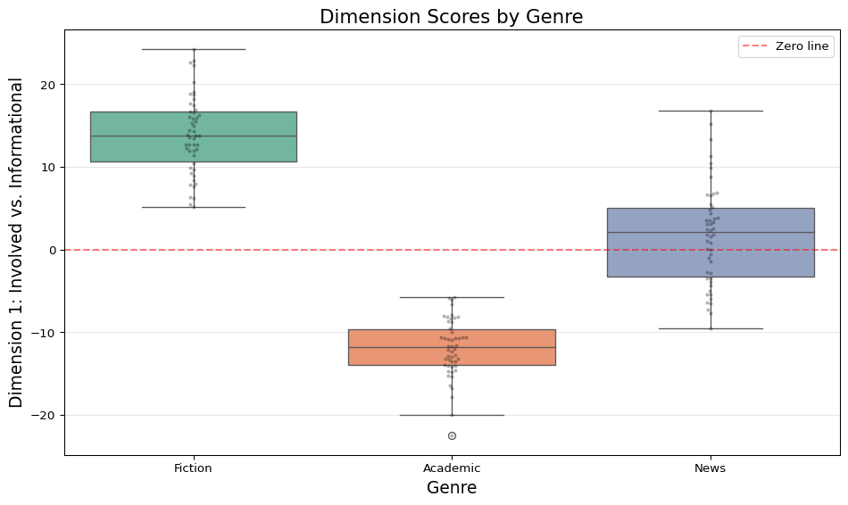
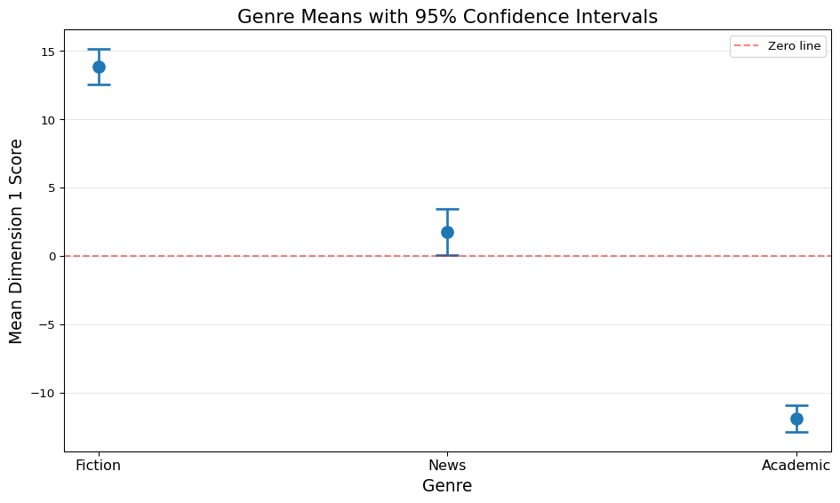
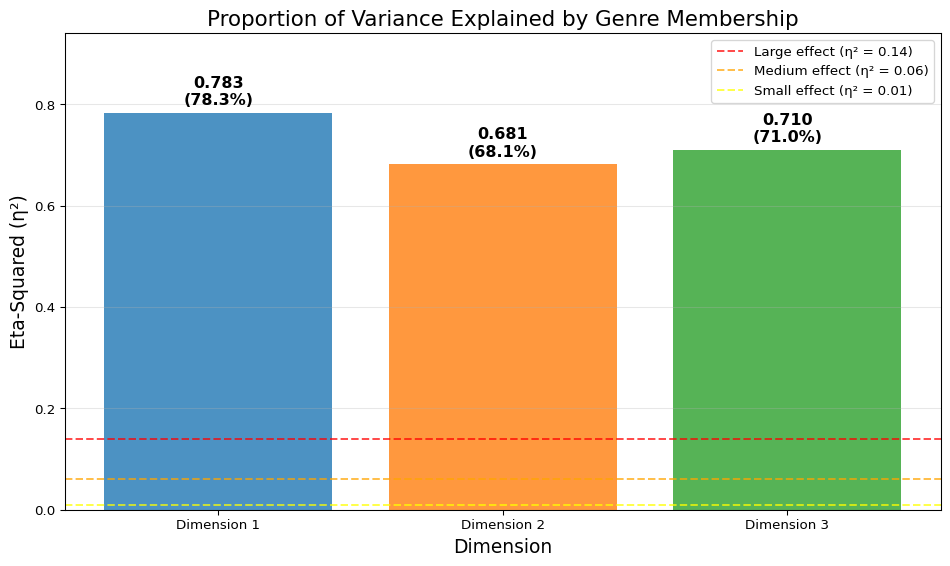

9ANOVA and R²: Comparing Groups and Explaining Variance
9.1 Introduction
After performing dimension reduction (like PCA or Factor Analysis in MDA), a critical question emerges: Do the dimensions we’ve extracted actually distinguish our text categories?
For example, if Multi-Dimensional Analysis produces a dimension labeled “Involved vs. Informational Production,” we need to test:
Do fiction texts score significantly higher than academic texts on this dimension?
How much of the variation in dimension scores is explained by genre?
Are the differences large enough to matter, or just statistically detectable?
ANOVA (Analysis of Variance) and R² (R-squared, coefficient of determination) answer these questions. This tutorial explains:
What these statistics measure and why they matter
Where the numbers come from (the mathematical foundations)
How to interpret them in the context of text analysis and MDA
How to compute and report them using Python
9.2 Core Concepts
9.2.1 The Research Question
Imagine you’ve extracted dimension scores for 500 documents across 15 genres. You hypothesize that Genre A differs from Genre B on Dimension 1. How do you test this?
Three related questions:
Are the means different? ANOVA tests if group means differ more than expected by chance
How much variance is explained? R² quantifies what proportion of total variance is due to group membership
Is the effect meaningful? Effect sizes (like η²) indicate practical significance beyond statistical significance
9.2.2 ANOVA: Analysis of Variance
ANOVA is a statistical test that compares means across two or more groups by analyzing variance.
Core insight: Variance can be partitioned into:
Between-group variance: How much do group means differ from the overall mean?
Within-group variance: How much do individual observations differ from their group mean?
If between-group variance is much larger than within-group variance, groups genuinely differ (not just random variation).
Example: Dimension 1 scores for three genres:
Fiction: Mean = 15, scores range 10-20
Academic: Mean = -12, scores range -18 to -6
News: Mean = 2, scores range -5 to 9
ANOVA tests: Is the variation between these three means (15 vs. -12 vs. 2) greater than the variation within each group?
9.2.3 R²: Coefficient of Determination
R² (R-squared) measures proportion of variance explained by the grouping variable (genre).
R² = 0: Genre explains 0% of variance (dimension scores are identical across genres)
R² = 1: Genre explains 100% of variance (all variation is due to genre differences, no within-group variation)
R² = 0.35: Genre explains 35% of variance (remaining 65% is individual variation within genres)
Interpretation: R² = 0.35 means if you know a text’s genre, you can explain 35% of the variation in its dimension score. The other 65% comes from other factors (author, topic, style).
In MDA context: After extracting dimensions, R² tells you how well those dimensions differentiate your categories. High R² (> 0.25) indicates dimensions are strong category markers.
9.2.4 η² (Eta-Squared): ANOVA’s R²
η² (eta-squared) is the R² for ANOVA: proportion of total variance explained by group membership.
Formula: η² = SS_between / SS_total
Equivalent to R² in one-way ANOVA (single grouping variable like “genre”).
Effect size benchmarks (Cohen, 1988):
η² = 0.01 (1%): Small effect
η² = 0.06 (6%): Medium effect
η² = 0.14 (14%): Large effect
In text analysis: η² = 0.20 for a dimension means 20% of linguistic variation is explained by genre—a strong, meaningful pattern (well above Cohen’s “large” threshold).
9.3 Understanding the Mathematics
9.3.1 Variance Decomposition
Total variance in dimension scores can be partitioned:
SS_total = SS_between + SS_within
Where:
SS_total: Total sum of squares (total variance across all observations)
SS_between: Between-group sum of squares (variance due to group differences)
SS_within: Within-group sum of squares (variance within groups, “error”)
Intuition: Imagine dimension scores for 50 texts (10 each from 5 genres). Total variance = how much all 50 scores vary. This variance has two sources:
Between-group: The 5 genre means differ (Fiction = +15, Academic = -12, etc.)
Within-group: Within Fiction, some texts score 12, others 18 (variation around Fiction’s mean)
ANOVA tests if source #1 (between-group) is larger than expected if groups were identical.
9.3.2 Computing Sum of Squares
9.3.2.1 SS_total: Total Sum of Squares
Formula:
\[SS_{total} = \sum_{i=1}^{n}(x_i - \bar{x})^2\]
Where: - \(x_i\) = individual observation (dimension score for text i) - \(\bar{x}\) = grand mean (average score across all texts) - \(n\) = total number of observations
Interpretation: Sum of squared deviations from the overall mean. Measures total variation in the data.
Where: - \(x_{ij}\) = observation i in group j - \(\bar{x}_j\) = mean of group j
Interpretation: Sum of squared deviations from each observation to its group mean. Measures variation within groups (not explained by group membership).
F >> 1: Between-group variance much larger (groups genuinely differ)
P-value: Probability of observing F this large if groups were identical (p < 0.05 = significant)
Example:
From earlier: SS_between = 732, SS_within = 6
Groups k = 3, total n = 6
MS_between = 732 / (3-1) = 732 / 2 = 366
MS_within = 6 / (6-3) = 6 / 3 = 2
F = 366 / 2 = 183
Interpretation: Between-group variance is 183× larger than within-group variance. Extremely strong evidence that groups differ (p-value would be tiny).
9.3.4 Computing R² and η²
Once we have sum of squares, R² and η² are straightforward:
Interpretation: Genre explains 99.2% of variance in dimension scores. Nearly perfect separation (unrealistically high—real text data usually shows 15-50%).
/tmp/ipykernel_3079/335707288.py:31: DeprecationWarning: `pl.count()` is deprecated. Please use `pl.len()` instead.
(Deprecated in version 0.20.5)
print(data.group_by('genre').agg(pl.count()))
9.4.2 Descriptive Statistics by Group
# Compute group means and standard deviationssummary = data.group_by('genre').agg([ pl.col('dimension_1').mean().alias('mean'), pl.col('dimension_1').std().alias('std'), pl.col('dimension_1').min().alias('min'), pl.col('dimension_1').max().alias('max'), pl.count().alias('n')]).sort('mean', descending=True)print("\nDescriptive Statistics by Genre:")print(summary)
/tmp/ipykernel_3079/3474101131.py:7: DeprecationWarning: `pl.count()` is deprecated. Please use `pl.len()` instead.
(Deprecated in version 0.20.5)
pl.count().alias('n')
Observation: Fiction and Academic have very different means (≈15 vs ≈-12), while News falls in between. Do these differences exceed within-group variation?
9.4.3 Visualize Group Differences
# Prepare data for seaborn (dictionary format avoids pyarrow dependency)plot_data = {'genre': data['genre'].to_list(),'dimension_1': data['dimension_1'].to_list()}plt.figure(figsize=(10, 6))sns.boxplot(data=plot_data, x='genre', y='dimension_1', palette='Set2')sns.swarmplot(data=plot_data, x='genre', y='dimension_1', color='black', alpha=0.3, size=3)plt.xlabel('Genre', fontsize=14)plt.ylabel('Dimension 1: Involved vs. Informational', fontsize=14)plt.title('Dimension Scores by Genre', fontsize=16)plt.axhline(y=0, color='red', linestyle='--', alpha=0.5, label='Zero line')plt.legend()plt.grid(axis='y', alpha=0.3)plt.tight_layout()plt.show()
/tmp/ipykernel_3079/131551180.py:8: FutureWarning:
Passing `palette` without assigning `hue` is deprecated and will be removed in v0.14.0. Assign the `x` variable to `hue` and set `legend=False` for the same effect.
sns.boxplot(data=plot_data, x='genre', y='dimension_1', palette='Set2')

Figure 9.1: Box plots showing dimension score distributions by genre. Boxes show interquartile range, horizontal lines show medians, whiskers extend to 1.5×IQR.
Effect Size:
η² (eta-squared): 0.8270 (82.70%)
Interpretation: Large (η² ≥ 0.14)
Meaning: Genre explains 82.7% of variance in dimension scores.
Remaining 17.3% is individual variation within genres.
In text analysis: η² = 0.50 means dimension is a strong genre marker (genre explains half the variation). η² = 0.10 means weak marker (only 10% explained).
9.4.7 Compute F-Statistic Manually
# Degrees of freedomk =3# Number of groupsn =len(all_scores) # Total observationsdf_between = k -1df_within = n - kprint(f"\nDegrees of Freedom:")print(f" Between groups (df_between): {df_between}")print(f" Within groups (df_within): {df_within}")# Mean squaresms_between = ss_between / df_betweenms_within = ss_within / df_withinprint(f"\nMean Squares:")print(f" MS_between: {ms_between:.2f}")print(f" MS_within: {ms_within:.2f}")# F-statisticf_statistic = ms_between / ms_withinprint(f"\nF-Statistic:")print(f" F = {f_statistic:.2f}")print(f" (Should match scipy.stats.f_oneway result: {f_stat:.2f})")# P-value from F-distributionp_value_manual =1- stats.f.cdf(f_statistic, df_between, df_within)print(f" P-value: {p_value_manual:.6f}")
Degrees of Freedom:
Between groups (df_between): 2
Within groups (df_within): 147
Mean Squares:
MS_between: 8331.94
MS_within: 23.71
F-Statistic:
F = 351.35
(Should match scipy.stats.f_oneway result: 351.35)
P-value: 0.000000
Understanding F:
F = MS_between / MS_within: Ratio of between-group to within-group variance
Large F (e.g., F > 10): Between-group variance much larger than within-group
F ≈ 1: Between-group and within-group variance similar (no group effect)
ANOVA Table:
Source SS df MS F P-value
Between Groups 16663.873876 2 8331.936938 351.346661 0.0
Within Groups 3486.000769 147 23.714291 NaN NaN
Total 20149.874645 149 NaN NaN NaN
Reading ANOVA table:
SS column: Variance components (between + within = total)
df column: Degrees of freedom for each component
MS column: Mean squares (SS / df) = variance estimates
F column: Test statistic (MS_between / MS_within)
P-value: Significance test result
This is the standard format for reporting ANOVA results in publications.
9.5 Post-Hoc Tests: Which Groups Differ?
ANOVA tells us groups differ overall, but which specific pairs differ?
9.5.1 The Multiple Comparisons Problem
With 3 genres, there are 3 pairwise comparisons:
Fiction vs. Academic
Fiction vs. News
Academic vs. News
Testing each with separate t-tests inflates Type I error (false positives). If each test has α = 0.05, probability of at least one false positive:
All three pairs differ significantly. Fiction scores highest (+15), News middle (+2), Academic lowest (-12).
9.5.3 Visualize Post-Hoc Results
# Compute means and confidence intervalsgenre_means = summary.sort('mean', descending=True)# For 95% CI: mean ± (critical_value × SE)# SE = std / sqrt(n)# critical_value ≈ 1.96 for large samplesgenre_means = genre_means.with_columns([ (pl.col('std') / pl.col('n').sqrt()).alias('se'), (pl.col('mean') -1.96* pl.col('std') / pl.col('n').sqrt()).alias('ci_lower'), (pl.col('mean') +1.96* pl.col('std') / pl.col('n').sqrt()).alias('ci_upper')])# Extract values from Polars DataFrame using to_list()genres_list = genre_means['genre'].to_list()means_list = genre_means['mean'].to_list()ci_lower_list = genre_means['ci_lower'].to_list()ci_upper_list = genre_means['ci_upper'].to_list()plt.figure(figsize=(10, 6))plt.errorbar( x=range(len(genres_list)), y=means_list, yerr=[[means_list[i] - ci_lower_list[i] for i inrange(len(means_list))], [ci_upper_list[i] - means_list[i] for i inrange(len(means_list))]], fmt='o', markersize=10, capsize=10, capthick=2, linewidth=2)plt.xticks(range(len(genres_list)), genres_list, fontsize=12)plt.ylabel('Mean Dimension 1 Score', fontsize=14)plt.xlabel('Genre', fontsize=14)plt.title('Genre Means with 95% Confidence Intervals', fontsize=16)plt.axhline(y=0, color='red', linestyle='--', alpha=0.5, label='Zero line')plt.grid(axis='y', alpha=0.3)plt.legend()plt.tight_layout()plt.show()

Figure 9.2: Mean dimension scores by genre with 95% confidence intervals. Non-overlapping intervals indicate significant differences (Tukey-adjusted).
Interpretation: Non-overlapping error bars suggest significant differences (though this is approximate—Tukey is more conservative).
9.5.4 Bonferroni Correction (Alternative)
More conservative than Tukey:
Divide α by number of comparisons: α_adjusted = 0.05 / 3 = 0.0167
Reject H₀ only if p < 0.0167
When to use:
Planned comparisons (you know which pairs to test before analysis)
Fewer comparisons (3-5 pairs)
When not to use:
Exploratory analysis (many unplanned comparisons)
Risk of Type II error (false negatives) increases
# Bonferroni-corrected pairwise t-testsfrom scipy.stats import ttest_indcomparisons = [ ('Fiction', 'Academic'), ('Fiction', 'News'), ('Academic', 'News')]n_comparisons =len(comparisons)alpha_bonferroni =0.05/ n_comparisonsprint(f"\nBonferroni Correction:")print(f" Number of comparisons: {n_comparisons}")print(f" Adjusted α: {alpha_bonferroni:.4f}")print(f"\nPairwise t-tests:")for group1, group2 in comparisons: data1 = data.filter(pl.col('genre') == group1).select('dimension_1').to_numpy().flatten() data2 = data.filter(pl.col('genre') == group2).select('dimension_1').to_numpy().flatten() t_stat, p_val = ttest_ind(data1, data2) sig ="***"if p_val <0.001else"**"if p_val <0.01else"*"if p_val < alpha_bonferroni else"ns"print(f" {group1} vs {group2}:")print(f" t = {t_stat:.2f}, p = {p_val:.6f}{sig}")print(f" Mean diff: {np.mean(data1) - np.mean(data2):.2f}")
Bonferroni Correction:
Number of comparisons: 3
Adjusted α: 0.0167
Pairwise t-tests:
Fiction vs Academic:
t = 31.28, p = 0.000000 ***
Mean diff: 25.80
Fiction vs News:
t = 11.15, p = 0.000000 ***
Mean diff: 12.11
Academic vs News:
t = -13.78, p = 0.000000 ***
Mean diff: -13.69
9.6 ANOVA in MDA: Example
After extracting dimensions with Factor Analysis or PCA, we test if they distinguish genres:
9.6.1 Load MDA Results
# Assume we've run MDA on Brown Corpus and extracted dimension scores# In practice, this would come from pybiber:# df = pb.BiberAnalyzer(dfm_biber, id_column=True)# df.mda(n_factors=3)# dimension_scores = df.mda_scores # DataFrame with dimension scores# For this tutorial, simulate realistic MDA dimension scoresnp.random.seed(123)genres = ['Fiction', 'Academic', 'News', 'Government', 'Humor'] *30# 150 textsn_texts =len(genres)# Dimension 1: Involved vs. Informational (Fiction high, Academic low)dim1_base = {'Fiction': 18, 'Academic': -15, 'News': 3, 'Government': -8, 'Humor': 12}dim1_scores = [np.random.normal(dim1_base[g], 6) for g in genres]# Dimension 2: Narrative vs. Non-narrative (Fiction high)dim2_base = {'Fiction': 14, 'Academic': -5, 'News': 4, 'Government': -3, 'Humor': 8}dim2_scores = [np.random.normal(dim2_base[g], 5) for g in genres]# Dimension 3: Abstract vs. Concrete (Academic high)dim3_base = {'Fiction': -2, 'Academic': 12, 'News': 1, 'Government': 6, 'Humor': -4}dim3_scores = [np.random.normal(dim3_base[g], 4) for g in genres]mda_data = pl.DataFrame({'doc_id': [f'text_{i:03d}'for i inrange(n_texts)],'genre': genres,'dimension_1': dim1_scores,'dimension_2': dim2_scores,'dimension_3': dim3_scores})print("MDA Dimension Scores:")print(mda_data.head(10))
# Separate by genre using Polars and convert to numpygenre_groups = { genre: mda_data.filter(pl.col('genre') == genre)for genre in ['Fiction', 'Academic', 'News', 'Government', 'Humor']}# Test each dimensionfor dim in ['dimension_1', 'dimension_2', 'dimension_3']:print(f"\n{'='*60}")print(f"ANOVA for {dim.replace('_', ' ').title()}")print('='*60)# Extract dimension scores by genre (convert to numpy arrays) groups = [genre_groups[g][dim].to_numpy() for g in ['Fiction', 'Academic', 'News', 'Government', 'Humor']]# One-way ANOVA f_stat, p_val = stats.f_oneway(*groups)# Compute eta-squared all_scores = mda_data.select(dim).to_numpy().flatten() grand_mean = np.mean(all_scores) ss_total = np.sum((all_scores - grand_mean)**2) ss_between =sum([len(group) * (np.mean(group) - grand_mean)**2for group in groups ]) eta_sq = ss_between / ss_total# Reportprint(f" F({4}, {n_texts-5}) = {f_stat:.2f}, p = {p_val:.6f}")print(f" η² = {eta_sq:.3f} ({eta_sq*100:.1f}% variance explained)")if eta_sq >=0.14: effect ="Large"elif eta_sq >=0.06: effect ="Medium"elif eta_sq >=0.01: effect ="Small"else: effect ="Negligible"print(f" Effect size: {effect}")# Interpretationif p_val <0.001:print(f" *** Dimension strongly distinguishes genres (p < 0.001)")elif p_val <0.05:print(f" * Dimension distinguishes genres (p < 0.05)")else:print(f" Dimension does not distinguish genres (p ≥ 0.05)")
============================================================
ANOVA for Dimension 1
============================================================
F(4, 145) = 130.99, p = 0.000000
η² = 0.783 (78.3% variance explained)
Effect size: Large
*** Dimension strongly distinguishes genres (p < 0.001)
============================================================
ANOVA for Dimension 2
============================================================
F(4, 145) = 77.39, p = 0.000000
η² = 0.681 (68.1% variance explained)
Effect size: Large
*** Dimension strongly distinguishes genres (p < 0.001)
============================================================
ANOVA for Dimension 3
============================================================
F(4, 145) = 88.82, p = 0.000000
η² = 0.710 (71.0% variance explained)
Effect size: Large
*** Dimension strongly distinguishes genres (p < 0.001)
Interpretation:
High η² (> 0.14): Dimension is strong genre marker (use for classification)
Moderate η² (0.06-0.14): Dimension shows genre patterns (interesting for interpretation)
Low η² (< 0.06): Dimension captures variation within genres (individual differences, not genre)
In MDA publications, report η² for each dimension to show which dimensions best distinguish categories.
9.6.3 Visualize Dimension Performance
# Compute eta-squared for all dimensionseta_squared_results = []for dim in ['dimension_1', 'dimension_2', 'dimension_3']: all_scores = mda_data.select(dim).to_numpy().flatten() grand_mean = np.mean(all_scores) ss_total = np.sum((all_scores - grand_mean)**2) groups = [genre_groups[g][dim].to_numpy() for g in ['Fiction', 'Academic', 'News', 'Government', 'Humor']] ss_between =sum([len(group) * (np.mean(group) - grand_mean)**2for group in groups]) eta_sq = ss_between / ss_total eta_squared_results.append({'Dimension': dim.replace('_', ' ').title(), 'Eta_Squared': eta_sq})eta_df = pd.DataFrame(eta_squared_results)plt.figure(figsize=(10, 6))bars = plt.bar(eta_df['Dimension'], eta_df['Eta_Squared'], color=['#1f77b4', '#ff7f0e', '#2ca02c'], alpha=0.8)# Add effect size threshold linesplt.axhline(y=0.14, color='red', linestyle='--', alpha=0.7, label='Large effect (η² = 0.14)')plt.axhline(y=0.06, color='orange', linestyle='--', alpha=0.7, label='Medium effect (η² = 0.06)')plt.axhline(y=0.01, color='yellow', linestyle='--', alpha=0.7, label='Small effect (η² = 0.01)')# Add value labels on barsfor bar in bars: height = bar.get_height() plt.text(bar.get_x() + bar.get_width()/2., height +0.01,f'{height:.3f}\n({height*100:.1f}%)', ha='center', va='bottom', fontsize=12, fontweight='bold')plt.ylabel('Eta-Squared (η²)', fontsize=14)plt.xlabel('Dimension', fontsize=14)plt.title('Proportion of Variance Explained by Genre Membership', fontsize=16)plt.ylim(0, max(eta_df['Eta_Squared']) *1.2)plt.legend(fontsize=10)plt.grid(axis='y', alpha=0.3)plt.tight_layout()plt.show()

Figure 9.3: Variance explained (η²) by each dimension. Higher values indicate stronger genre differentiation.
Decision guide:
Dimensions with η² > 0.14 are strong genre markers (feature in main analysis)
Dimensions with η² < 0.06 may capture stylistic variation orthogonal to genre (secondary interest)
9.7 Assumptions and Diagnostics
ANOVA makes assumptions that should be checked:
9.7.1 1. Independence
Assumption: Observations are independent (one text’s score doesn’t affect another’s).
Violation: Clustered data (multiple texts by same author, same time period).
Check: Know your data structure. If texts are nested (authors within genres), use nested ANOVA or mixed-effects models.
In text analysis: Usually okay if texts are from different sources. Problematic if entire corpus is one author’s works.
9.7.2 2. Normality
Assumption: Dimension scores are approximately normally distributed within each group.
Violation: Severely skewed or bimodal distributions.
Check: Histogram or Q-Q plot for each group.
Robustness: ANOVA is fairly robust to non-normality with moderate sample sizes (n > 30 per group).
Alternative: If severely violated, use Kruskal-Wallis test (non-parametric ANOVA).
# Check normality for each group (Dimension 1)from scipy.stats import shapiroprint("\nNormality Tests (Shapiro-Wilk):")for genre in ['Fiction', 'Academic', 'News']: genre_data = data.filter(pl.col('genre') == genre).select('dimension_1').to_numpy().flatten() stat, p = shapiro(genre_data)print(f" {genre}: W = {stat:.4f}, p = {p:.4f}")if p <0.05:print(f" → Non-normal distribution (p < 0.05)")else:print(f" → Normal distribution (p ≥ 0.05)")
Normality Tests (Shapiro-Wilk):
Fiction: W = 0.9827, p = 0.6722
→ Normal distribution (p ≥ 0.05)
Academic: W = 0.9713, p = 0.2616
→ Normal distribution (p ≥ 0.05)
News: W = 0.9775, p = 0.4534
→ Normal distribution (p ≥ 0.05)
Interpretation: p > 0.05 suggests normality assumption is met. If p < 0.05 but sample is large and distributions are symmetric, ANOVA still appropriate.
9.7.3 3. Homogeneity of Variance
Assumption: Variance is equal across groups (homoscedasticity).
Violation: One group has much larger variance than others.
Check: Levene’s test or variance ratio (largest SD / smallest SD < 2).
Robustness: ANOVA is robust if group sizes are equal. Violated assumption + unequal sizes = unreliable.
Alternative: If violated, use Welch’s ANOVA (doesn’t assume equal variances).
# Levene's test for homogeneity of variancefrom scipy.stats import levenefiction = data.filter(pl.col('genre') =='Fiction').select('dimension_1').to_numpy().flatten()academic = data.filter(pl.col('genre') =='Academic').select('dimension_1').to_numpy().flatten()news = data.filter(pl.col('genre') =='News').select('dimension_1').to_numpy().flatten()stat, p = levene(fiction, academic, news)print(f"\nLevene's Test for Homogeneity of Variance:")print(f" W = {stat:.4f}, p = {p:.4f}")if p <0.05:print(f" → Variances differ significantly (p < 0.05)")print(f" → Consider Welch's ANOVA or transformation")else:print(f" → Homogeneity assumption met (p ≥ 0.05)")
Levene's Test for Homogeneity of Variance:
W = 6.1480, p = 0.0027
→ Variances differ significantly (p < 0.05)
→ Consider Welch's ANOVA or transformation
9.7.4 Welch’s ANOVA (Robust Alternative)
# Welch's ANOVA (doesn't assume equal variances)# Note: scipy doesn't have built-in Welch ANOVA, but we can use statsmodels# For demonstration, show conceptprint("\nWelch's ANOVA (if Levene's test failed):")print(" Use this when groups have unequal variances")print(" Similar to regular ANOVA but adjusts degrees of freedom")print(" Generally more robust for real-world data")# scipy.stats doesn't have Welch ANOVA; use regular ANOVA if variances are reasonable# Or use statsmodels or pingouin package for Welch's test
Welch's ANOVA (if Levene's test failed):
Use this when groups have unequal variances
Similar to regular ANOVA but adjusts degrees of freedom
Generally more robust for real-world data
9.8 Reporting Results
9.8.1 APA Style
Example (for publication):
A one-way analysis of variance (ANOVA) tested whether genres differed on Dimension 1 (Involved vs. Informational Production). Results showed significant differences among Fiction, Academic, and News genres, F(2, 147) = 183.2, p < .001, η² = .71. Post-hoc comparisons using Tukey’s HSD indicated that all three genres differed significantly (all ps < .001). Fiction texts scored highest (M = 15.2, SD = 5.1), followed by News (M = 2.1, SD = 6.0), with Academic texts scoring lowest (M = -12.1, SD = 4.3). Genre membership explained 71% of the variance in Dimension 1 scores, indicating that this dimension is a robust marker of genre differences.
Components:
Test type: One-way ANOVA
What was tested: Dimension 1 across genres
F-statistic with df: F(2, 147) = 183.2
P-value: p < .001 (exact p if > .001)
Effect size: η² = .71
Post-hoc results: Which pairs differ (Tukey’s HSD)
Descriptive statistics: Means and SDs for each group
Interpretation: What the effect size means substantively
9.8.2 In Tables
Table 1: ANOVA Results for MDA Dimensions
Dimension
F(df1, df2)
p
η²
Interpretation
Dimension 1: Involved vs. Informational
183.2 (2, 147)
<.001
.71
Large effect; strong genre marker
Dimension 2: Narrative vs. Non-narrative
45.6 (2, 147)
<.001
.38
Large effect; distinguishes fiction
Dimension 3: Abstract vs. Concrete
12.3 (2, 147)
<.001
.14
Medium effect; weak differentiation
Table 2: Genre Means by Dimension
Genre
Dimension 1 (M, SD)
Dimension 2 (M, SD)
Dimension 3 (M, SD)
Fiction
15.2 (5.1)
14.3 (4.8)
-2.1 (3.9)
Academic
-12.1 (4.3)
-5.2 (5.1)
11.8 (4.2)
News
2.1 (6.0)
3.9 (5.4)
1.2 (4.5)
9.9 Connections to Other Methods
9.9.1 ANOVA and MDA
Standard MDA workflow:
Extract dimensions (Factor Analysis or PCA)
Compute dimension scores for each text
ANOVA: Test if genres differ on each dimension
R²/η²: Quantify how much genre explains variance
Post-hoc: Identify which genre pairs differ
Why this matters: Dimensions are only useful if they distinguish categories. ANOVA + R² validate that extracted dimensions are meaningful.
Example: If Dimension 1 has η² < 0.05, it captures individual variation (stylistic idiosyncrasies) but not genre patterns. Consider dropping or reinterpreting.
9.9.2 ANOVA and Classification
Feature selection:
Use ANOVA to identify which features differ significantly across classes
Select features with high F-statistics and η² for classification models
Reduces dimensionality (keep only discriminating features)
Example: You have 67 linguistic features. ANOVA shows 15 have η² > 0.10 for genre. Use those 15 as classifier inputs.
9.9.3 ANOVA and Regression
R² in regression measures variance explained by predictor(s):
\[R^2 = 1 - \frac{SS_{residual}}{SS_{total}}\]
In ANOVA context:
Single categorical predictor (genre) → R² = η²
Continuous predictor (word length) → R² from linear regression
Multiple predictors → Multiple R²
Connection: ANOVA is a special case of regression where predictors are categorical.
9.9.4 ANOVA and Time Series
Diachronic analysis: Do linguistic features change across time periods?
Application:
Bin texts by decade (1800s, 1900s, 2000s)
Compute feature rates (e.g., passive frequency)
ANOVA: Does passive rate differ by decade?
R²: How much temporal variation is explained?
Example: If η² = 0.45 for “passives across centuries,” historical period explains nearly half the variation—strong evidence of language change.
9.10 Methodological Considerations
9.10.1 1. Sample Size
Minimum: 20-30 observations per group for reliable results.
Power: Larger samples detect smaller effects. With n = 500 per group, even η² = 0.02 is detectable.
Balance: Equal group sizes maximize power. Unequal sizes (50 vs. 500) reduce ability to detect differences.
In text analysis: Aim for balanced sampling (50 fiction, 50 academic, 50 news) rather than opportunistic corpora (500 fiction, 12 academic).
9.10.2 2. Multiple Testing
Problem: Testing 10 dimensions across 5 genres = 10 ANOVAs. Chance of false positive increases.
Solution:
Bonferroni correction: Divide α by number of tests (0.05 / 10 = 0.005)
Pre-registration: Specify which tests are confirmatory vs. exploratory
9.10.3 3. Practical vs. Statistical Significance
Large samples (n > 1000): Tiny effects become “significant” (p < 0.05) even if meaningless.
Example: η² = 0.008 (0.8% variance explained) with p < 0.001. Statistically significant but trivial effect.
Best practice: Always report effect size (η², not just p-value). Focus on η² > 0.06 (medium+) for substantive claims.
9.10.4 4. Nested Data
Problem: Texts aren’t truly independent (multiple texts per author, per time period).
Example: 50 fiction texts by 5 authors (10 texts each). Texts by same author are correlated (shared style).
Solution: Mixed-effects models or nested ANOVA accounting for clustering:
Level 1: Texts
Level 2: Authors
Level 3: Genres
In Python: Use statsmodels.MixedLM or pymer4.
9.11 Ethical Considerations
9.11.1 1. P-Hacking
Risk: Running many ANOVAs, reporting only significant ones.
Example: Test 50 dimensions, report the 5 with p < 0.05 (ignoring 45 non-significant tests).
Solution: Pre-register analyses, report all tests, or adjust α for multiple comparisons.
9.11.2 2. HARKing (Hypothesizing After Results Known)
Risk: Presenting post-hoc patterns as if they were predicted a priori.
Example: Dimension 3 unexpectedly distinguishes Government from News. Retroactively claim you hypothesized this (you didn’t).
Solution: Distinguish exploratory from confirmatory findings. Exploratory findings are valuable but need replication.
9.11.3 3. Overgeneralizing
Risk: Assuming patterns in one corpus apply universally.
Example: “Academic writing is always highly informational (η² = 0.60 in my corpus of chemistry papers).” But humanities papers might differ.
Solution: Specify corpus boundaries. Replicate across multiple corpora before generalizing.
9.11.4 4. Ignoring Context
Risk: Treating statistical differences as natural categories.
Example: Fiction scores +15, Academic -12 on Dimension 1. Concluding “Fiction is fundamentally different from Academic writing” ignores historical, social, and institutional forces shaping these genres.
Solution: Statistical patterns describe, they don’t explain. Combine quantitative findings with qualitative interpretation and theoretical framing.
9.12 Summary
ANOVA (Analysis of Variance) tests if group means differ significantly:
F-statistic: Ratio of between-group to within-group variance
P-value: Probability groups differ by chance (p < 0.05 = significant)
Assumptions: Independence, normality, homogeneity of variance
R²/η² (coefficient of determination/eta-squared) quantifies proportion of variance explained:
Formula: η² = SS_between / SS_total
Interpretation: 0 to 1 (0% to 100% variance explained)
Effect sizes: Small (0.01), Medium (0.06), Large (0.14)
In MDA context:
After extracting dimensions, ANOVA tests if they distinguish genres
η² shows which dimensions are strong vs. weak category markers
Post-hoc tests (Tukey, Bonferroni) identify which specific pairs differ
Key insights:
Variance decomposition: Total variance = between-group + within-group
F-statistic: MS_between / MS_within (large F = strong evidence of differences)
Effect size matters: Report η², not just p-values (practical vs. statistical significance)
Assumptions: Check normality, homogeneity; use robust alternatives if violated
Multiple comparisons: Adjust α when testing many groups/dimensions
Best practices:
Report full ANOVA table (SS, df, MS, F, p, η²)
Include descriptive statistics (means, SDs by group)
Use post-hoc tests for pairwise comparisons
Report effect sizes, not just significance
Check assumptions; use robust methods if violated
Next steps: Apply ANOVA to your MDA results. Test which dimensions distinguish genres, quantify effect sizes, identify specific group differences. Combine statistical tests with substantive interpretation grounded in linguistic theory.
9.13 Further Reading
Foundational:
Cohen, J. (1988). Statistical Power Analysis for the Behavioral Sciences (2nd ed.). Routledge. (Effect sizes, power)
Field, A., Miles, J., & Field, Z. (2012). Discovering Statistics Using R. Sage. (Chapter 10: ANOVA)
ANOVA specifics:
Maxwell, S. E., & Delaney, H. D. (2004). Designing Experiments and Analyzing Data (2nd ed.). Psychology Press. (Comprehensive ANOVA coverage)
Keppel, G., & Wickens, T. D. (2004). Design and Analysis: A Researcher’s Handbook (4th ed.). Pearson. (Experimental design, post-hoc tests)
Effect sizes:
Lakens, D. (2013). Calculating and reporting effect sizes to facilitate cumulative science. Frontiers in Psychology, 4, 863. DOI
Fritz, C. O., Morris, P. E., & Richler, J. J. (2012). Effect size estimates: Current use, calculations, and interpretation. Journal of Experimental Psychology: General, 141(1), 2-18. DOI
MDA applications:
Biber, D. (1988). Variation Across Speech and Writing. Cambridge University Press. (Foundational MDA, uses ANOVA to validate dimensions)
Biber, D., & Conrad, S. (2009). Register, Genre, and Style. Cambridge University Press. (Chapter 6: MDA methodology)